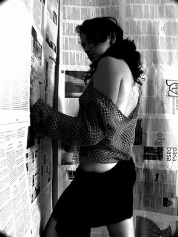

|
SONIA Sentía que me ahogaba. Frotaba su sexo contra mi cara con desorbitada
pasión. A penas podía trabajarlo con la lengua, pues a cada
movimiento se me escapaba el blanco. Por otra parte, ella no parecía
necesitarlo ya. Así estuvimos un rato. Finalmente se vino y sentí como
caía en el descanso.
- ¿Te gustó? - pregunté inseguro.
- Sí, claro. - Algo en su voz me dejó insatisfecho de la
respuesta.
- Por lo menos te viniste.
- Yo siempre me vengo. Siempre. Había un tipo que con sólo
meterme un dedo en el culo me hacía venirme a mares.
Sentí envidia de ese tipo.
Después de mamar durante casi diez minutos, sentí envidia
de ese tipo.
- Bueno, es tu turno. - Espera. 
- Lo prometiste.
- Déjame descansar. Háblame de algo.
Me senté en la cama y la contemplé. Era preciosa. Una muñequita
de dieciséis años. ¿Qué habría hecho
yo para tener tanta suerte? ¿Iniciar una conversación? ¿Acompañarla a su casa? ¿Llamarla luego?
Acciones vulgares, que no justifican nada. Pero aquí estaba, tendida
sobre la cama, con su sonrisa inocente y el bollo visiblemente húmedo.
- ¿Qué miras? - me preguntó desafiante.
- Nada, nada. - contesté. Casi me intimida. Acabo de responder como
un niño.
Ya no estoy para estos trances. Me siento como desvalido. Demasiado viejo,
y hablo como un niño.
- Ven. - me ordenó. Yo me acerqué cauteloso. - Dame tu mano.
-Y la tomó sin permiso alguno. Luego introdujo un dedo en su vagina.
- Si quieres seguir, más vale que me hables de algo. - y sus movimientos
sustituían mi pasividad- Por eso estoy aquí. Háblame.
- gimió.
- Pero no sé de qué.
- De cualquier cosa... - gimió nuevamente.
- Creo que te gustaba la literatura... Hay un libro que odio y amo a la
vez. A veces creo que está del todo
equivocado...
- Ya cállate. No es eso lo que quiero oír. Dime que te gusto.
- Me gustas.
- Dilo como si fuera cierto.
- Me gustas.
Se saco el dedo, y me rechazó empujándome con el pie. Todos
estos años y ahora soy juguete para esta niña.
- Está bien. Te la voy a mamar. Pero procura decirlo como si lo
sintieras.
Se acomodó entre mis rodillas. Se reclinó sobre mí.
Su espalda era un ovillo que podía abarcar con los brazos. Menuda.
Pronto no tuve cómo pensar. Sus labios llegaban hasta la base de
mi miembro.
Me recobré. Pase la mano entre sus nalgas y acaricié su culo.
La hinqué con el índice. Pero como a penas alcanzaba, lo
cambié por el del medio.
- Basta. - Levantó su cabeza rubia de entre mis piernas y me fulminó.
- Saca el dedo. Dilo. - sus manos no habían abandonado la tarea.
Suavemente mecían el pellejo.
- Me gustas. Me gustas mucho. Tanto que haría cualquier cosa por
ti. - afirmé con convicción.
Detuvo sus manipulaciones. Irguió el torso y me miró interrogativamente.
- ¿Sabes qué? Te creo. Sólo que no es suficiente.
- ¿De que carajos estás hablando? - aquella farsa me estaba
hartando. - Baja. - dije agarrándola por el cabello y forzando su
cabeza hacia mi entrepierna.
- ¡Déjame! - protestó violentamente mientras se liberaba.
- Ya no quiero.
Se apartó lo suficiente como para estar fuera del alcance de mis
brazos.
- Creo en lo que dices, pero lo dices tan fríamente. Debes haber
pasado por mucho. Ya no puedes ni convencer a una mujer de lo que sientes.
- se levantó de la cama.
- Vamos, ¿qué haces? Vuelve aquí.
- Eres un viejo triste. - me dijo mientras se vestía.
- Y me vas a dejar así, a medias. - estaba furioso. - Ya tú tuviste
tu orgasmo y te basta, ¿no?
Se puso los aretes delante del espejo. El gesto de las manos y el cuidado sutil.
La despreocupación. No le importo en lo absoluto. No la impresiono.
- No quiero que te vengas en mi boca. Para ti es como ir al baño. - sus
palabras me desarmaron.
- Puedo llamarte después. Otro día...
- Sí. Hazlo. - dijo mientras se iba.
Pero ambos sabíamos muy bien cual sería el resultado de esa llamada.
|
||||||||||
|
|